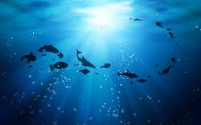

Beberapa tindakan nyata yang dapat dilakukan dalam kehidupan sehari-hari untuk mendukung pencapaian SDG 14 meliputi upaya sederhana namun memiliki dampak signifikan terhadap keberlanjutan ekosistem laut. Mengurangi penggunaan plastik sekali pakai merupakan langkah pertama yang sangat penting, misalnya dengan membawa tas belanja sendiri, menggunakan botol minum yang dapat diisi ulang, atau memilih produk dengan kemasan yang lebih ramah lingkungan. Selain itu, membiasakan diri untuk memilah sampah di rumah dapat membantu mengurangi jumlah limbah yang berpotensi terbawa ke sungai dan akhirnya mencemari laut. Masyarakat juga dapat berkontribusi melalui konsumsi hasil laut yang lebih bertanggung jawab dengan memilih produk perikanan yang legal, berkelanjutan, dan tidak berasal dari praktik penangkapan yang merusak lingkungan.
Upaya lain yang dapat dilakukan adalah menghemat penggunaan air di rumah, seperti mempersingkat durasi mandi, menutup keran saat tidak digunakan, dan segera memperbaiki kebocoran untuk mencegah pemborosan. Menjaga kebersihan lingkungan sekitar, khususnya saluran air dan sungai, juga memiliki peran penting karena kebersihan wilayah darat sangat berpengaruh terhadap kondisi laut. Partisipasi dalam kegiatan konservasi, seperti aksi bersih pantai atau kampanye lingkungan, dapat memperkuat kontribusi masyarakat terhadap pemulihan ekosistem laut. Selain itu, meningkatkan pengetahuan tentang isu kelautan melalui membaca, mengikuti seminar, atau menyebarkan informasi yang akurat dapat mendorong terbentuknya kesadaran kolektif. Dengan menerapkan langkah-langkah tersebut secara konsisten, masyarakat dapat berperan aktif dalam menjaga kelestarian laut dan mendukung terwujudnya SDG 14.